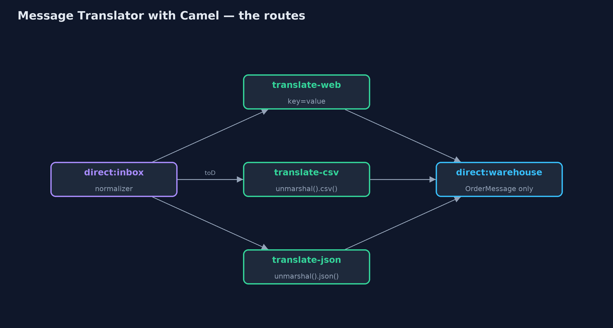
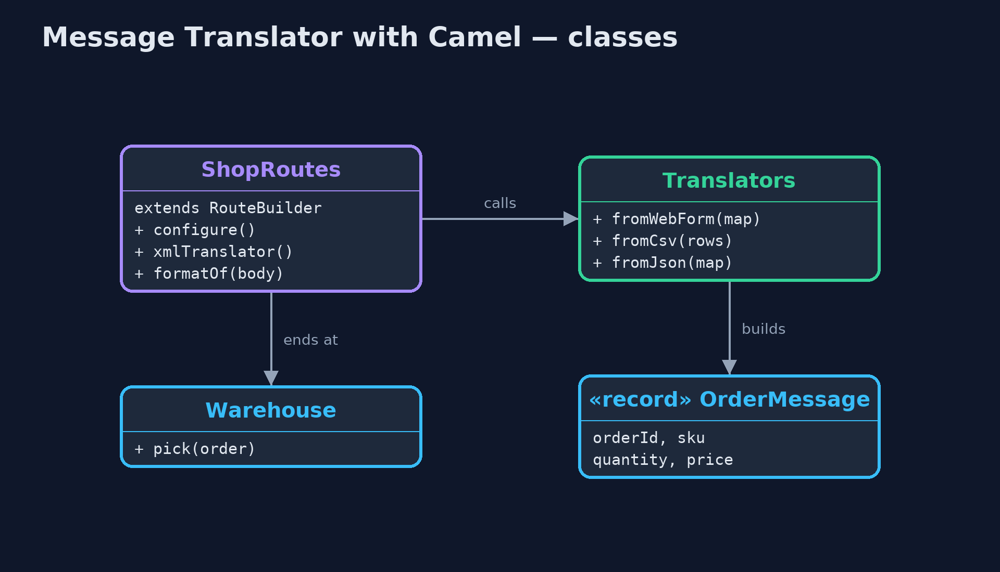
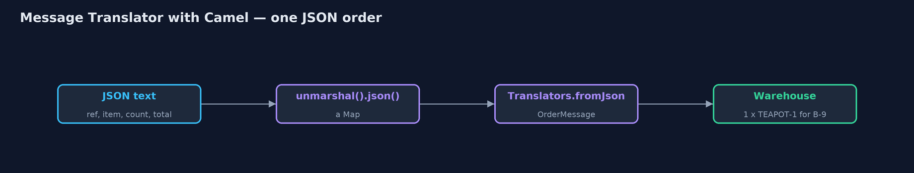
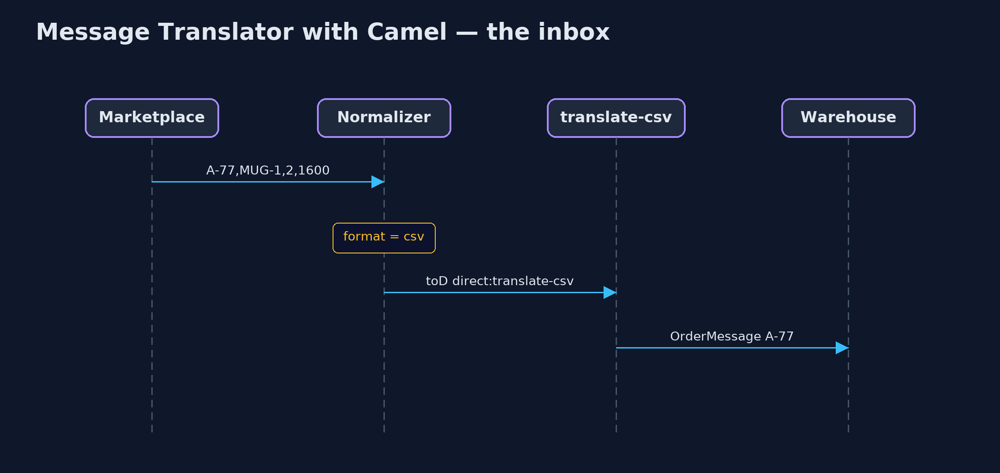

Message Translator with Apache Camel Pattern
src/main/java/com/jk/explore/translatorcamel/
├── CamelTranslatorDemo.java The five acts, with Apache Camel doing the translating and the routing
├── OrderMessage.java The canonical order: the one shape the warehouse understands, whatever the source
├── ShopRoutes.java The routes
├── Translators.java The last step of each translator
└── Warehouse.java The warehouse: it only accepts the canonical orderBuild the message translator with Apache Camel: one route per incoming format, Camel's own data formats to read CSV, JSON and XML, and a normalizer route that recognises the format and hands over to the right translator.
This is the framework version of the Message Translator pattern. The plain Java version of this pattern, a separate project in this category, writes every translator by hand. Here, Apache Camel does the plumbing: each incoming format has its own Camel route, Camel's data formats read CSV, JSON and XML, and a normalizer route recognises the format and sends each order to the right translator. The warehouse at the end only ever receives the one canonical order.
Camel is the best-known open-source library for the enterprise integration patterns. The pattern names in the book, translator, normalizer, router, are words in Camel's own route language, which is why it is worth seeing the pattern in it.
The idea in everyday terms
Think of an international post room with a sorting desk and a row of translators. The desk looks at each letter and sees which language it is in, then passes it to that language's translator. Every translator writes the same standard form for the office upstairs. Adding a new language means hiring one more translator; the desk and the office upstairs do not change.
The scenario
The online store takes orders from its own web form and from marketplaces. The web form sends key-value text, marketplace A sends CSV, marketplace B sends JSON with its own field names, and later marketplace C arrives with XML. The warehouse must only ever see one canonical order.
Run
Nothing to install beyond a Java 21 JDK: Camel runs inside the program, using its in-memory direct: endpoints, so no broker or container is needed.
./gradlew runThe demo tells the story in 5 acts, each printing exact numbers that the tests check:
| Act | What it shows |
|---|---|
| 1. Straight to the warehouse | Sending raw JSON to the warehouse route fails: Camel has no type converter from String to OrderMessage. |
| 2. A translator route per format | Three translator routes: web form, CSV via unmarshal().csv(), JSON via unmarshal().json(Jackson), each ending as a canonical pick. |
| 3. The normalizer | One inbox route recognises each format and uses toD to reach its translator; 5 routes run: normalizer, 3 translators, warehouse. |
| 4. A new format, a new route | XML first fails with no consumers on direct://translate-xml; after adding one route it is picked as 1 x KETTLE-1 for C-5. |
| 5. The bill | The gift note is still lost, and the program carries more than 20 library files against none for the plain version. |
Test
./gradlew test3 tests in DemoRunsTest, ShopRoutesTest. Every number the demo prints is asserted, and nothing depends on the clock, so every run gives the same result.
What the simulation got right, and what it left out
The plain Java version got the idea exactly right: one translator per format, one canonical order, and a normalizer that picks the translator, in a few dozen lines anyone can read. What it left out is everything a real integration library does for you: ready-made readers for CSV, JSON and XML, a type check that refuses anything that is not the canonical order before it reaches the warehouse, dynamic routing by format name, and the ability to add a translator as a new route while the others keep running. It also left out the cost: more than twenty library files, and a route language to learn.
Technologies and versions
| Technology | Version | Used for |
|---|---|---|
| Java | 21 | the code (toolchain set in build.gradle) |
| Gradle | 9.2.1 (wrapper) | build and run, nothing to install |
| JUnit | 5.10.2 | the tests |
| Apache Camel | 4.22.1 | routes, the normalizer, type conversion |
| camel-csv, camel-jackson, camel-xpath | 4.22.1 | reading CSV, JSON and XML |
| SLF4J simple | 2.0.17 | Camel's logging, switched off |
| videokit | repository tool | the narrated video and animation: Piper en_US-amy-medium, speed 0.8, longer pauses (the approved amy-slow voice) |
Learning Material
| Document | What it is for |
|---|---|
| Dependencies | what the framework and infrastructure are, and why they are here |
| Problem statement | the situation and what the project must show |
| Prerequisites | what you need to know first |
| Message Translator with Apache Camel, explained | the acts in prose |
| Session guide | a one-hour lesson with exercises |
| Animated walkthrough | the acts step by step, narrated |
| Spec | what this project must be true of |
The pattern in one picture
One inbox, a translator route per format, one warehouse route.

Where each piece sits
Routes in one RouteBuilder; mapping in plain methods.

How the data moves
Text in, canonical order out.

Who calls whom, in order
The normalizer picks the translator by name.

Video
video/message-translator-with-camel-pattern-explained.mp4 (with .m4a audio and .srt subtitles) is built by video/build_video.sh. Rendered media is not committed.
What it costs
- More to carry. The program now needs more than twenty library files, against none for the plain version.
- A language to learn. Routes, endpoints, data formats and
toDare Camel's vocabulary, not Java's. - The same loss. Marketplace B's gift note still does not survive: a canonical model only keeps what it names.
When this is too much
For two or three formats that rarely change, the plain Java version is simpler and easier to debug. Camel pays off when there are many sources and formats, transports such as queues and files as well, and translators that are added over time.
Where you have already met this
- Apache Camel routes in Spring Boot or Quarkus applications.
- Spring Integration's transformers and MuleSoft's DataWeave, the same idea in other tools.
- The book Enterprise Integration Patterns, whose names Camel uses directly.
Where this sits
This project is in messaging-integration-patterns. It is the framework version of the plain Java Message Translator project in the same category, which is left unchanged.